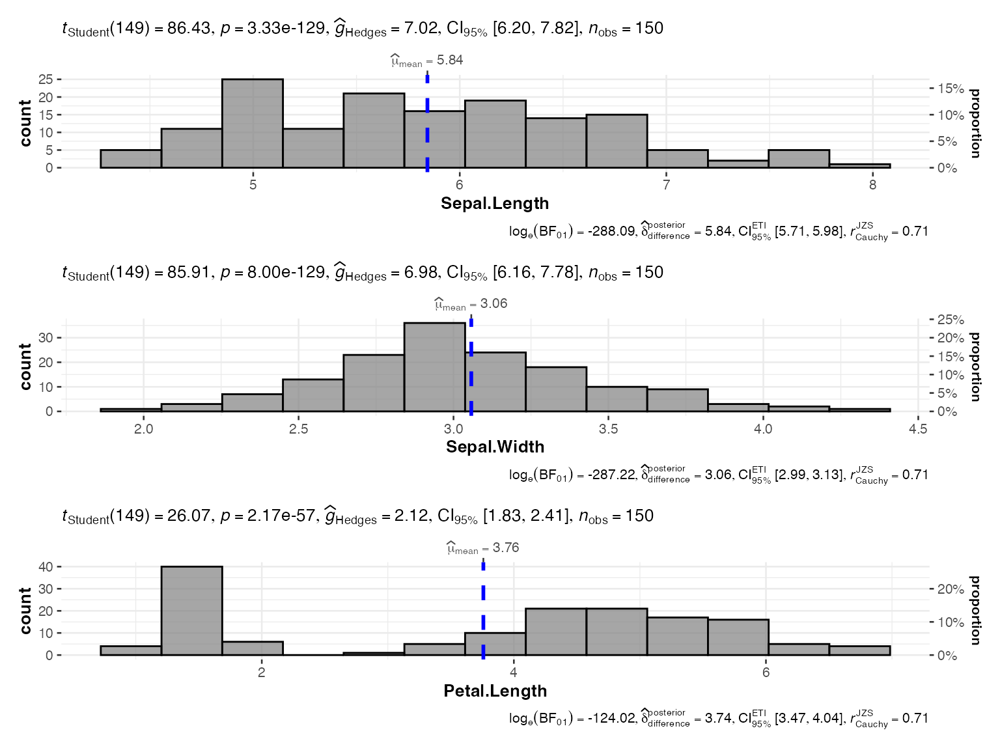
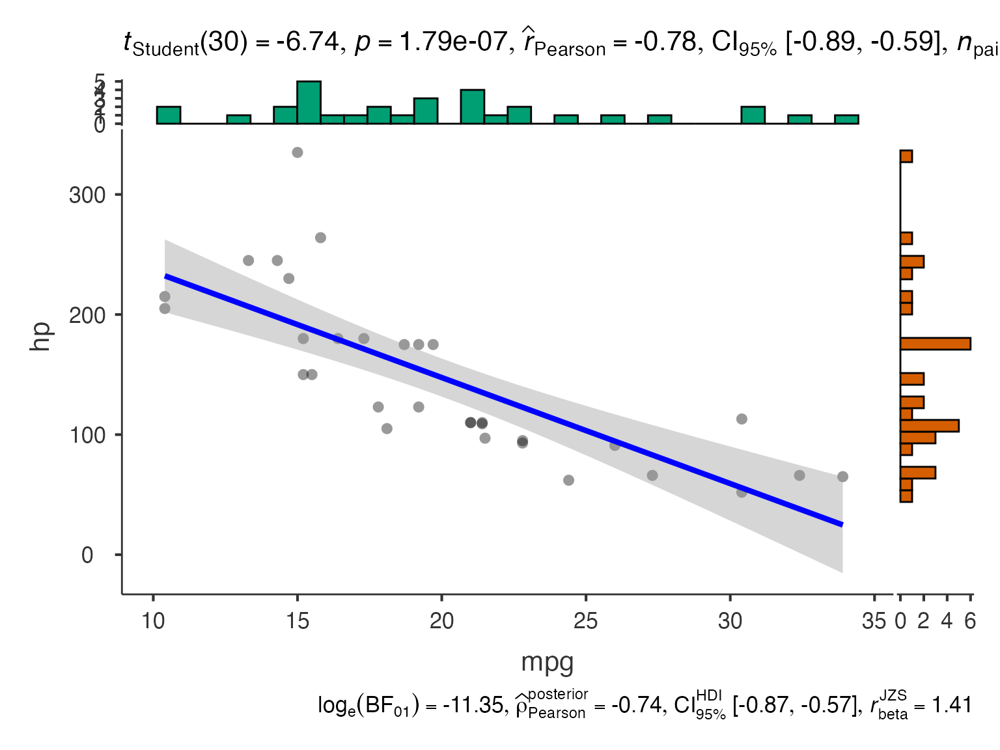
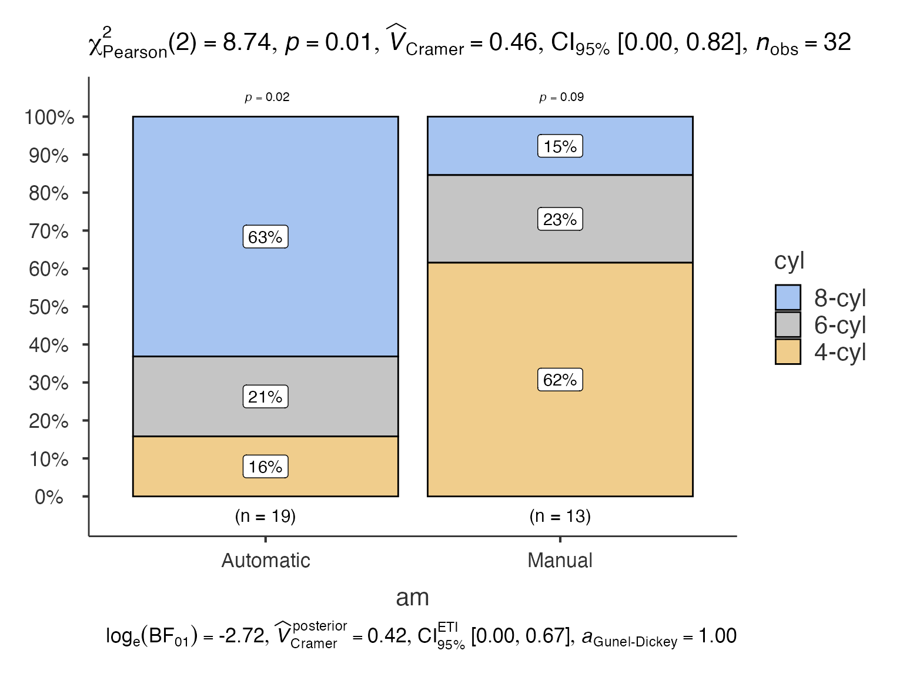
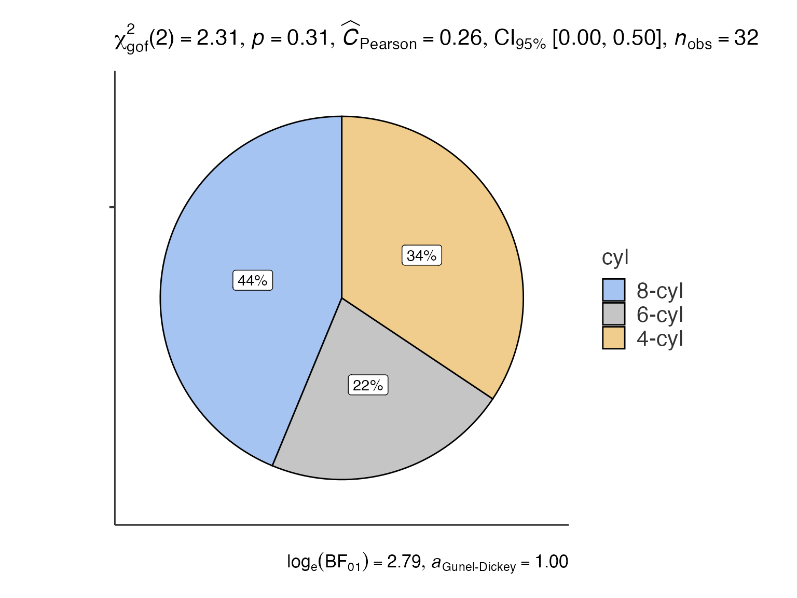

Complete Analysis Gallery - All jjstatsplot Functions
ClinicoPath Development Team
2025-07-15
Source:vignettes/09-analysis-gallery.Rmd
09-analysis-gallery.RmdComplete jjstatsplot Analysis Gallery
This comprehensive guide demonstrates every analysis type available in jjstatsplot with practical examples, use cases, and statistical interpretations.
library(ClinicoPath)
library(dplyr)
# Load datasets
data(mtcars)
data(iris)
# Prepare example datasets
mtcars_clean <- mtcars %>%
mutate(
cyl = factor(cyl, labels = c("4-cyl", "6-cyl", "8-cyl")),
am = factor(am, labels = c("Automatic", "Manual")),
vs = factor(vs, labels = c("V-shaped", "Straight"))
)
iris_clean <- iris %>%
mutate(Species = factor(Species))1. Histogram Analysis - jjhistostats()
Purpose
Explore the distribution of continuous variables with automatic normality testing and descriptive statistics.
When to Use
- Examine variable distributions before analysis
- Check normality assumptions
- Identify outliers and skewness
- Compare distributions across groups
Basic Usage
# Single variable distribution
hist_basic <- jjhistostats(
data = mtcars_clean,
dep = "mpg",
grvar = NULL # No grouping variable
)
hist_basic$plot
Advanced: Multiple Variables
# Multiple variables
hist_multi <- jjhistostats(
data = iris,
dep = c("Sepal.Length", "Sepal.Width", "Petal.Length"),
grvar = NULL # No grouping variable
)
hist_multi$plot
Grouped Analysis
# Separate histograms by group
hist_grouped <- jjhistostats(
data = mtcars_clean,
dep = "mpg",
grvar = "cyl"
)
hist_grouped$plot2
2. Scatter Plots - jjscatterstats()
Purpose
Examine relationships between two continuous variables with correlation analysis and regression fitting.
When to Use
- Explore bivariate relationships
- Test correlation hypotheses
- Visualize regression relationships
- Identify influential points
Basic Usage
# Basic scatter plot with correlation
scatter_basic <- jjscatterstats(
data = mtcars_clean,
dep = "mpg",
group = "hp",
grvar = NULL # No grouping variable
)
scatter_basic$plot
Grouped Analysis
# Separate scatter plots by group
scatter_grouped <- jjscatterstats(
data = mtcars_clean,
dep = "mpg",
group = "hp",
grvar = "cyl"
)
scatter_grouped$plot2
3. Box-Violin Plots (Between Groups) -
jjbetweenstats()
When to Use
- Compare means/medians between groups
- Test group differences
- Visualize data distribution by group
- Assess homogeneity of variance
Basic Usage
# Compare groups
between_basic <- jjbetweenstats(
data = iris_clean,
dep = "Sepal.Length",
group = "Species"
)
between_basic$plot
Multiple Dependent Variables
# Multiple variables comparison
between_multi <- jjbetweenstats(
data = iris_clean,
dep = c("Sepal.Length", "Petal.Length"),
group = "Species"
)
between_multi$plot
4. Correlation Matrix - jjcorrmat()
When to Use
- Explore multivariate relationships
- Identify redundant variables
- Screen variables for analysis
- Data reduction decisions
Basic Usage
# Correlation matrix
corrmat_basic <- jjcorrmat(
data = mtcars,
dep = c("mpg", "hp", "wt", "qsec", "disp"),
grvar = NULL # No grouping variable
)
corrmat_basic$plot
Grouped Analysis
# Separate correlation matrices by group
corrmat_grouped <- jjcorrmat(
data = iris,
dep = c("Sepal.Length", "Sepal.Width", "Petal.Length", "Petal.Width"),
grvar = "Species"
)
corrmat_grouped$plot2
5. Dot Charts - jjdotplotstats()
When to Use
- Present group means clearly
- Show uncertainty (confidence intervals)
- Compare multiple groups
- Publication-ready group comparisons
Basic Usage
# Dot chart with group means
dot_basic <- jjdotplotstats(
data = mtcars_clean,
dep = "mpg",
group = "cyl",
grvar = NULL # No grouping variable
)
dot_basic$plot
Multiple Variables
# Multiple dependent variables
dot_multi <- jjdotplotstats(
data = iris_clean,
dep = c("Sepal.Length"),
group = "Species",
grvar = NULL # No grouping variable
)
dot_multi$plot
6. Bar Charts - jjbarstats()
When to Use
- Display frequency distributions
- Test independence between categorical variables
- Visualize contingency tables
- Report categorical data summaries
Basic Usage
# Frequency bar chart
bar_basic <- jjbarstats(
data = mtcars_clean,
dep = "cyl",
group = NULL, # No grouping variable
grvar = NULL # No grouping variable
)
bar_basic$plotTwo-Way Analysis
# Two categorical variables
bar_twoway <- jjbarstats(
data = mtcars_clean,
dep = "cyl",
group = "am",
grvar = NULL # No additional grouping variable
)
bar_twoway$plot
7. Pie Charts - jjpiestats()
When to Use
- Show proportions of categories
- Test goodness-of-fit
- Display survey results
- Present percentage distributions
Basic Usage
# Basic pie chart
pie_basic <- jjpiestats(
data = mtcars_clean,
dep = "cyl",
group = NULL, # No grouping variable
grvar = NULL # No grouping variable
)
pie_basic$plot1
Grouped Analysis
# Separate pie charts by group
pie_grouped <- jjpiestats(
data = mtcars_clean,
dep = "cyl",
group = NULL, # No grouping variable
grvar = "am"
)
pie_grouped$plot28. Within-Subjects Analysis - jjwithinstats()
Example with Paired Data
# Create example paired data
paired_data <- data.frame(
Subject = rep(1:20, 2),
Time = rep(c("Pre", "Post"), each = 20),
Score = c(rnorm(20, 50, 10), rnorm(20, 55, 10)),
Group = rep(c("Treatment", "Control"), 20)
)
# Reshape for within-subjects analysis
paired_wide <- paired_data %>%
tidyr::pivot_wider(names_from = Time, values_from = Score)
within_basic <- jjwithinstats(
data = paired_wide,
dep1 = "Pre",
dep2 = "Post",
dep3 = NULL, # No third dependent variable
dep4 = NULL, # No fourth dependent variable
)
within_basic$plot
9. Waffle Charts - jwaffle()
When to Use
- Show parts of a whole
- Display survey results
- Present demographic breakdowns
- Alternative to pie charts
Basic Usage
# Waffle chart
waffle_basic <- jwaffle(
data = mtcars_clean,
counts = "hp",
groups = "cyl",
facet = "am"
)
waffle_basic$plot
Choosing the Right Analysis
Decision Tree
# Pseudocode decision tree
if (data_type == "one_continuous") {
use_jjhistostats()
} else if (data_type == "two_continuous") {
use_jjscatterstats() # or jjcorrmat() for multiple variables
} else if (data_type == "continuous_by_groups") {
if (groups_independent) {
use_jjbetweenstats()
} else {
use_jjwithinstats()
}
} else if (data_type == "categorical") {
if (display_preference == "bars") {
use_jjbarstats()
} else if (display_preference == "pie") {
use_jjpiestats()
} else if (display_preference == "waffle") {
use_waffle()
}
} else if (data_type == "group_means") {
use_jjdotplotstats()
}Data Type Requirements
| Analysis | Dependent Variable | Grouping Variable | Sample Size |
|---|---|---|---|
| Histogram | Continuous | Optional categorical | n ≥ 10 |
| Scatter | 2 × Continuous | Optional categorical | n ≥ 10 |
| Box-Violin | Continuous | Categorical (2+ levels) | n ≥ 5 per group |
| Correlation Matrix | 2+ × Continuous | Optional categorical | n ≥ 10 |
| Dot Chart | Continuous | Categorical (2+ levels) | n ≥ 3 per group |
| Bar Chart | Categorical | Optional categorical | n ≥ 5 |
| Pie Chart | Categorical | Optional categorical | n ≥ 5 |
| Within-Subjects | 2+ × Continuous | Optional categorical | n ≥ 5 pairs |
| Waffle Chart | Categorical | Optional categorical | n ≥ 10 |
Best Practices Summary
Statistical Considerations
- Check assumptions before interpreting results
- Report effect sizes alongside p-values
- Consider multiple comparisons when doing many tests
- Validate findings with appropriate diagnostics
Visualization Guidelines
- Choose appropriate plot for your data type
- Use consistent color schemes across related plots
- Include informative titles and labels
- Consider your audience when selecting plot complexity
Workflow Recommendations
- Start with exploratory plots (histograms, scatter plots)
- Progress to confirmatory analyses (between-groups, correlations)
- Use grouped analyses to explore interactions
- Combine multiple approaches for comprehensive understanding
This gallery provides a complete reference for all jjstatsplot analyses. Each function offers extensive customization options - explore the jamovi interface or function documentation for additional parameters and settings.